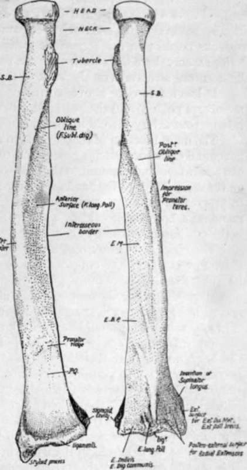
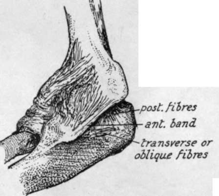

Ulna And Radius. Continued
Description
This section is from the book "The Anatomy Of The Human Skeleton", by J. Ernest Frazer. Also available from Amazon: The anatomy of the human skeleton.
Ulna And Radius. Continued
The radius is held to the ulna by certain bands of connection, which, while keeping it in constant contact, yet do not in the least impair its power of rotation round that bone : these can be co nsidered under three headings :-
Fig. 71.-Right radius. S.B. insertion of Supinator brevis ; E.M., E.B.P. origins of Extensor ossis and brevis pollicis ; P.Q. Pronator quadratus insertion. To tell right from left, hold the bone with the head up, the tubercle internally, and the concave aspect of the lower third forward.
(1) The interosseous membrane and oblique ligament.
(2) The lower radio-ulnar joint, especially the triangular fibro-cartilage.
(3) The upper joint : the orbicular ligament.
(1) Interosseous Membrane
Aponeurotic, becoming thin and fascial at its lower end. Fibres chiefly directed downwards and inwards, from radius to ulna : some bands, however, on posterior aspect running in the opposite direction. The interosseous borders on the bones fade away below, showing a tendency to reach the posterior aspect: here the thin membrane becomes continuous with the annular and other ligamentous structures on the back of the wrist.
It has a free edge above, corresponding with the upper border of Extensor ossis metacarpi pollicis, and the posterior interosseous artery passes over this. The anterior interosseous artery pierces it near the lower fourth.
The main function of this sheet is to afford additional surface for the origin of deep flexor and extensor muscles, but, owing to the direction of the majority of its fibres, it can also, when taut, transmit to the ulna some of the pressure that is more directly exerted on the radius through the hand and at the same time will tend to keep the bones together in proportion as the pressure increases. That this is not the chief function of the membrane, however, is evident when we find that it is not taut during pronation, which is the position most commonly assumed when pressure is transmitted from the hand.
The oblique ligament: not a part of the interosseous membrane : a band directed down and out from the outer margin of the coronoid process to the radius just below its tubercle, and therefore slightly in front of the plane of interosseous membrane as well as altogether above it. On the ulna it is, when broad, continuous at its upper end with the orbicular hgament, but it is as a rule a feeble band ; its mechanical action, if of any value at all, would be to check any downward sliding of radius on ulna.
(2) Fibro-Carlilage Of Lower Radio-Ulnar Joint
This is responsible for keeping the bones apposed at their lower ends, for the feeble ligaments of this joint are of necessity very lax to permit of the extensive rotation of the radius round the head of the ulna. The structure is triangular in shape, the apex fastened to the ulna at the outer side of the base of the styloid process, in the axis of rotation, and the base attached to the inner margin of the lower end of radius : it follows, therefore, that the radius can rotate round its axis, made fast to it by the fibro-cartilage, which is thus hke a broad spoke, so to speak, in the wheel in the circumference of which the radius moves. It is usually only definitely cartilaginous in its outer part.
Synovial membrane is loose hke the capsule, and is sometimes termed the Membrana sacciformis. The capsule is attached to the edges of the fibro-cartilage, so that, unless this is perforated, the radio-ulnar cavity is quite separate from the radio-carpal joint.
(3) The Orbicular Ligament holds the head of the radius in the lesser sigmoid cavity of the ulna : it is a part of the general capsule of the elbow-joint, from which it cannot be separated (Fig. 72).
Attached to the front and back margins of the lesser cavity, the orbicular fibres surround the radial head, to which they are not fastened, so that it is free to rotate within the circle formed by them and the cavity. It is hned by synovial membrane which is reflected from its lower border on to the neck of the radius. The fibres not only surround the head, but also the upper part of the neck, and here they are somewhat constricted so that the upper end of the bone is more firmly grasped by them.
The elbow-joint contains, enclosed in a common capsule and with a common . synovial cavity, the humero-ulnar, radio-ulnar, and humero-radial articulations. There are indications in the joint that the radial articulations were at one time distinct from the humero-ulnar, but for practical purposes the three may be considered as forming one compound joint, and the capsule is attached to the humerus above, while it reaches the ulna below and is also attached to the orbiculai band round the head of the radius, to which bone it is not fastened.
The inner and outer parts of the capsule, consisting of radiating fibres from the two condyles, are termed trilateral ligaments : the inner passes to the inner margins of the olecranon and coronoid processes, and the outer goes mainly to decussate and blend with the orbicular fibres, and partly to the ulna behind this (Fig. 72). Between the lateral ligaments are the anterior and posterior capsular fibres : posterior part is thin, consisting of a single and incomplete layer of vertical fibres, while the anterior portion of the capsular contains three layers ; deepest, thin and incomplete, transversely disposed : intermediate thick, vertical, and complete : superficia', one or two bands of obhque fibres running downwards and outwards to be lost on the front of the orbicular hgament.
We have already seen (p. 87) how the front capsule is attached above the fossae on the humerus, while the posterior fibres gain the floor of the olecranon fossa : below, the anterior capsular fibres make a marking on the coronoid process a little distance below its upper border (Fig. 75), and the posterior fibres join the olecranon a little way from its articular margin.
Evidently the anterior and posterior fibres of the capsule can have little to do with maintaining the articulation of the bones of the forearm with the humerus, and a cursory examination of the articular surfaces will suffice to show that the greater sigmoid cavity, deep as it is, does not grasp the trochlea to a sufficient extent to hold the bones together without external help, so we are compelled to seek for the provision of such assistance in the lateral ligaments.
Fig. 73 shows the internal lateral ligament as a coarsely fasciculated group of fibres radiating from the internal condyle ; the front fibres pass to the prominent tubercle on the inner side of the coronoid process and the neighbouring bone, while the posterior fibres go to the side of the olecranon. The intermediate fibres are not strong, and the notch between the coronoid and olecranon is bridged by transverse fibres (oblique ligament of Cooper). The anterior band is very strong, and is attached above to the lower and front part (Fig. 68) of the internal condyle as far as its tip- that is, practically in the axis of rotation of the ulna on the humerus ; therefore this band is in a state of nearly constant tension in all positions of the humero-ulnar joint.

Fig. 72.-Capsule of elbow-joint seen from the outer side.
The more posterior fibres, on the other hand, are relaxed on extension, and do not seem to be of much value as strengthening the joint : their position and direction make a ligamentous groove or concavity with the more prominent front band, into which the ulnar nerve passes from the back of the condyle (see Fig. 76).
The external lateral hgament radiates from the outer condyle, for the most pu.rt to decussate with and join the orbicular fibres, but some of its anterior and posterior fibres reach the coronoid and olecranon respectively : the posterior group is of especial importance, for this is attached to the external condyle (Figs. 68 and 72) in the line of the axis of movement, so that it is also in a state of tension. It is a well-marked set of fibres, passing from the condyle to the strong ridge on the ulna running from the olecranon along the back of the lesser sigmoid cavity, and for a httle distance below this on the prominent rim of the triangular area below the cavity : it is partly fused with the orbicular hgament, and accounts for the greater length of the posterior border of the lesser sigmoid notch (Fig. 72).
The upper end of the radius is on the whole in front of the plane of the ulna : its head is against the coronoid process, but the ulna is bowed backwards below this prominence, and this, in conjunction with the presence of the olecranon and heavy shaft below the olecranon, gives the radius its rather anterior position: the articular surfaces for the two bones on the humerus are nearly on the same level, but the radius articulates with that bone by the upper surface of its head, whereas the ulna carries its articular surface on its front aspect. When the forearm is pronated, the radius turns over the front of the ulna altogether, with the exception of its head.
This movement takes place round an axis that can be drawn, for practical purposes, from the middle of the head of the radius to that of the ulna, just outside the base of its styloid process, as shown in Fig. 74.
Fig. 73.-Inner aspect of elbow-joint. Note the strong anterior band from front of inner condyle to inner tubercle on coronoid process. This stands away from the posterior fibres, thus making a concavity in which the ulnar nerve lies.
Continue to:
- prev: Ulna And Radius
- Table of Contents
- next: Ulna